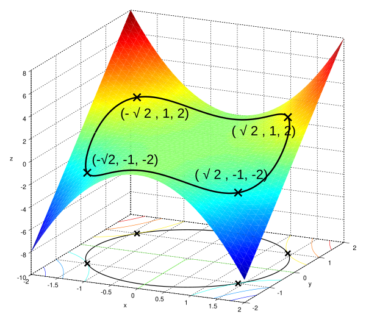
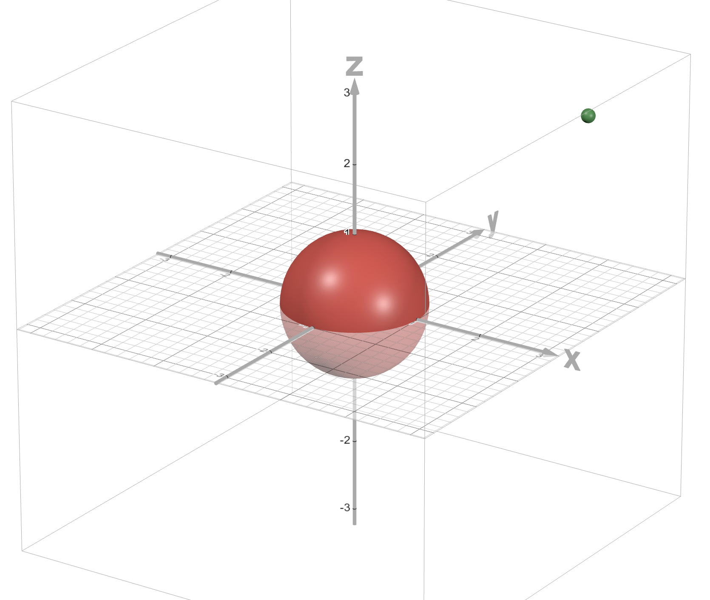
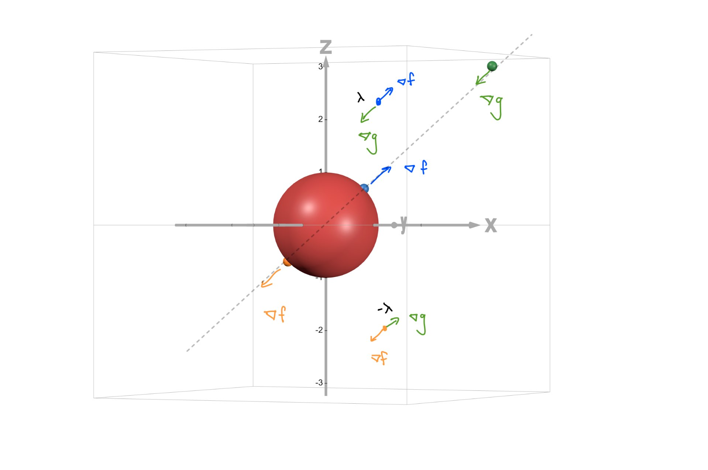
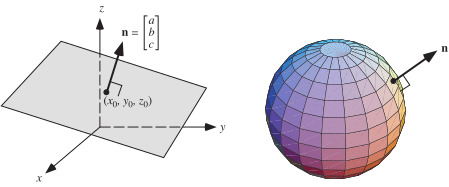
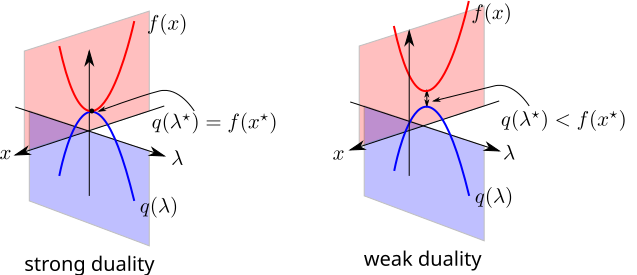
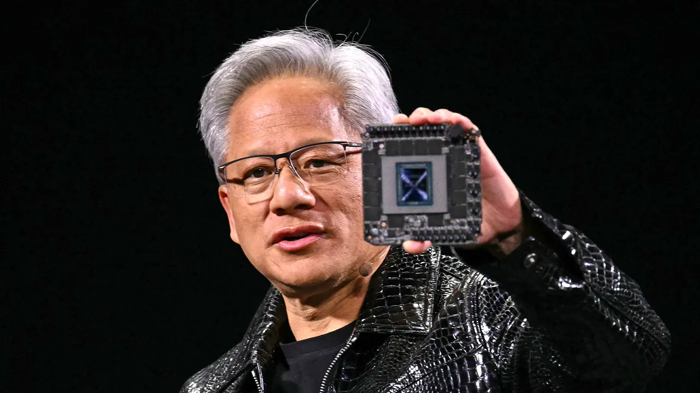
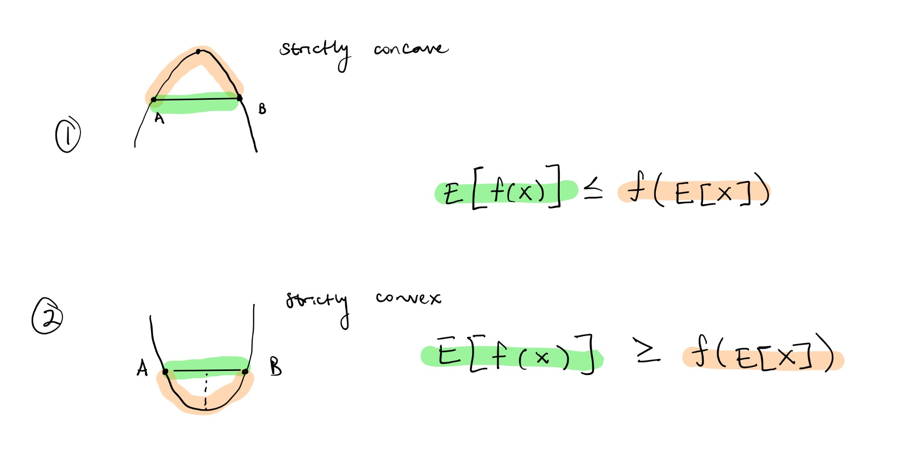
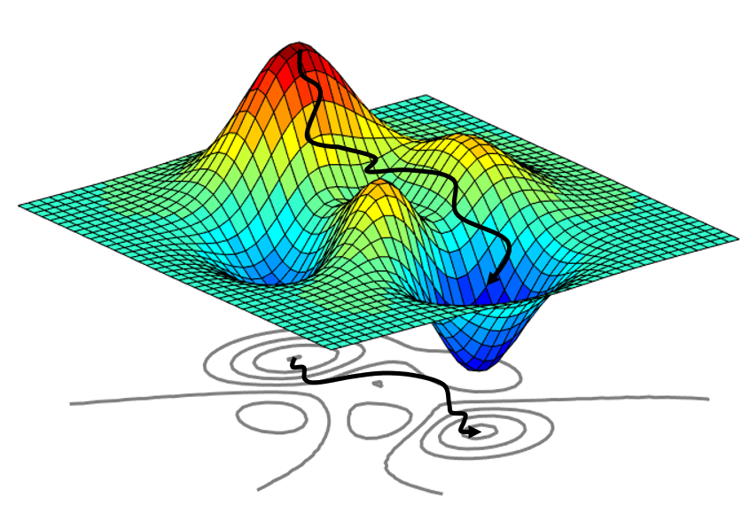

← Home
Optimization Roadtrip

Brief Optimization Overview
This chapter will mainly serve as a review of optimization so no primer :p.
Optimization means we want to minimize or maximize something (usually a function).
Method of Lagrangian Multipliers
Lagrangian multipliers is method use to find the local min / max given some constraint by setting gradients of your function and a constraint function parallel.
Recall we used this in our regularized regression lecture to add a constraint during gradient descent.
This allowed us to not drop the ball to the very bottom.
Formal Def: Method of Lagrange Multipliers
To find a local min/max subject to constraint $g(x,y,z) = k$ (if exists), find the value of $x, y, z, \lambda$ that simultaneously satsify:
$$
\mathcal{L} = \nabla f - \lambda g \\
\nabla f = \lambda \nabla g \\
g(x,y,z) = k \\
\lambda \neq 0
$$
Note: sometimes this is written as $\nabla f = -\lambda \nabla g $ to "cancel" the gradients.
$\lambda$ is a constant so it is effectively the same thing.
It is easier to do an example for this to make sense:
$$
\text{Suppose we want to find the point on the sphere $x^2 + y^2 + z^2 = 1$ closest to the point $(3, 1, 3)$}
$$.

Graphed on desmos 3d
Overview
- Constraint: sphere => $g = x^2 + y^2 + z^2 = 1$
- k: 1, where $g(x,y,z) = k$
- Function: distance => $d = f = \sqrt{(x-3)^2 + (y-1)^2 + (z-3)^2}$
- Type of Optimization: minimum (distance)
Note, we can use $f = d^2$ for an easier optimization.
This does not change the answer since the smallest distance and smallest sqaured distance occur at the same point.
Now, let's set up the problem:
$$
\begin{aligned}
f = d^2 = (x-3)^2 + &(y-1)^2 + (z-3)^2 \\
\nabla f = 2(x - 3) \cdot i + &2(y - 1) \cdot j + 2(z - 3) \cdot k \\
\nabla g = 2x \cdot i + &2y \cdot j + 2z \cdot k \\ \\
\nabla f &= \lambda \nabla g \\
2(x - 3) &= \lambda 2x \Rightarrow x = \frac{3}{1 - \lambda} \\
2(y - 1) &= \lambda 2y \Rightarrow y = \frac{1}{1 - \lambda} \\
2(z - 3) &= \lambda 2z \Rightarrow z = \frac{3}{1 - \lambda} \\
s.t. \qquad g(x, y, z) &= k \\\\
g(x,y,z) = k &\Rightarrow x^2 + y^2 + z^2 = 1 \\
(\frac{3}{1 - \lambda})^2 + &(\frac{1}{1 - \lambda})^2 + (\frac{3}{1 - \lambda})^2 = 1 \\
\frac{9}{(1-\lambda)^2} + &\frac{1}{(1-\lambda^2)} + \frac{9}{(1-\lambda)^2} = 1 \\
19 &= (1-\lambda)^2 \\
\lambda &= 1 - \pm \sqrt{19} = 1 \pm \sqrt{19} \\\\
x = \frac{3}{1 - (1 \pm \sqrt{19})} &= \frac{3}{\pm \sqrt{19}} \\
y = \frac{1}{1 - (1 \pm \sqrt{19})} &= \frac{3}{\pm \sqrt{19}} \\
z = \frac{3}{1 - (1 \pm \sqrt{19})} &= \frac{3}{\pm \sqrt{19}} \\
\end{aligned}
$$
Here we have the following points where the orange represents the negative and blue is the positive:

Surface Normals
Gradients point to the direction of steepest ascent.
On a surface, it is represented by the
surface normal, a vector perpendicular
to that surface at a given point.

Notes
1. Notice how $\lambda$ scaled $\nabla g$ such that it cancels with $\nabla f$.
The important thing is that at the dashed line in black, our gradients are parallel to each other.
That means at this parallel line, there exists points that optimize our function hence $\nabla f - \lambda \nabla g = 0$
or $\nabla f = \lambda \nabla g$.
2. Also note that since $\lambda$ is a constant the negative of it is still a constant. Notation can differ,
some books refer $\lambda$ - it doesn't matter.
Obviously, the blue point is closer to $(3,1,3)$ shown in green.
Thus, our optimized point is:
$$
x = \frac{+3}{\sqrt{19}} \\
y = \frac{+1}{\sqrt{19}} \\
z = \frac{+3}{\sqrt{19}}
$$
So what point is closest to $(3,1,3)$? Answer: $(\frac{3}{\sqrt{19}}, \frac{1}{\sqrt{19}}, \frac{3}{\sqrt{19}})$.
KKT Conditions
Karush-Kuhn-Tucker (KKT) conditions define a set of conditions to solve a constrained optimization problem.
You basically use this to know whether there exists a candidate optimal point for constrained optimization problems that look like:
$$
\min f(x) \quad \text{subject to} \quad g_i(x) \le 0, \ h_j(x) = 0
$$
These ideas extend lagrangian multipliers.
The problem we did above was subjecting $g(x,y,z)$ to a constant $k$ where $g(x,y,z) = k$.
Now what if the constraint is an inequality such as $g(x) \le 0$?
The optimum is not a point like before but a region.
Thus we must satisfy the KKT conditions to proceed.
4 KKT Conditions:
Let $g(m,s)$ be some arbitrary condition where $g$ depends on $m,s$.
- Stationary: $\frac{\partial \mathcal{L}}{\partial \bullet} = 0 $
- Primal Feasibility: $g(m,s) \le 0$
- Dual Feasibility: $\lambda \ge 0$
- Complementary Slackness: $\lambda g(m,s) = 0$
- Active constraint: $g(m,s) = 0$ where $\lambda \ge 0$.
- Inactive constraint: $g(m,s) \neq 0$ where $\lambda = 0$.
This is also called the
saddle point thereom.
In optimization problems there is a Primal Form and a Dual Form.
Forms
- Primal Form: Original function $f(x)$
- Dual Form: Modifed problem built from lagrangian multipliers
- max(primal) = min(dual)
- max(dual) = min(primal)
If a primal and dual solution satisfy KKT, they create a candidate optimum pair which helps solve the inequality constraint.
We can quantify the primal and dual relationship as either weak or strong.
Duality Relationships
-
Weak Duality:
For minimization problems, the dual optimal value is always less than or equal to the primal optimal value.
$$
d^* \le p^*
$$
So the dual problem gives a valid lower bound on the true optimum.
We also say there exists a gap between primal and dual optimum values.
-
Strong Duality:
In many well-behaved convex problems, the primal and dual optimal values are equal.
$$
d^* = p^*
$$
This means solving the dual also solves the original problem.

TL;DR is that KKT turns constrained inequality optimization into solvable equations by extending
the lagrangian method with extra rules for inequalities.
Approximating Lower Bounds: Jenson's Inequality
I am going to switch gears from lagrangian methods and talk about Jenson.

Just kidding, wrong guy.
However, I am going to talk about how Jensen's Inequality (by another Jensen) is used in optimization.
In particular, Jensen's inequality is used to approximate the lower bound of a likelihood (ELBO).
The ELBO or evidence lower bound is the lower bound on the log-likelihood.
Why do we need a lower bound? Because log marginal likelihood (denominator of bayes) is usually very hard to calculate
because it could be summed across many latent variables (will cover bayes in the future).
What is this even for? It is mainly for probabilisitic models that use a prior.
All you need to know is:
- For strictly concave regions: $\mathbb{E}[f(x)] \le f(\mathbb{E}[x])$
- For strictly convex regions: $\mathbb{E[f(x)]} \ge f(\mathbb{E}[x])$
The lower bound is obviously on the "less" side of the inequality. Visually:

-
For a concave region, the expected value of the function is less than the function of the expected value.
Think about it logically: stopping early (where the mean is less), will make you go less high. Thus,
for a concanve function, this is the lower bound.
-
For a convex region, the expected value of the function is more than the function of the expected value.
Think about it logically: not taking a detour on the way down will make you go more down.
Thus for a convex region, this is a lower bound.
Note
Used for proofs. For example, in KL Divergence.
Conclusion
Side lecture. These are just some optimization techniques that are widely used.
This lecture was used to give people a solid background.
Also, we will be using these soon (maybe)!
